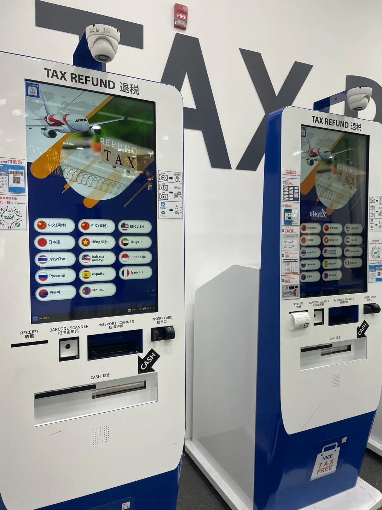

Incheon Airport Departure Guide
For an international flight from Incheon Airport, aim to reach the correct departure terminal about three hours before your flight. Allow more time if your airline recommends it, you have special baggage or you need to complete a tax refund.
You may still have half a day to explore Seoul after checking out of your hotel. How much time you have depends on your flight, where you're staying and how you plan to reach the airport.

Your Last Day in Korea
An early morning flight and an evening flight leave you with very different plans for your final day in Korea.
If you are flying early, pack the night before and arrange your airport transport in advance. There may be little time between leaving your accommodation and reaching the airline check-in counter.
With an afternoon or evening flight, you may still have time for breakfast, shopping or one last walk through Seoul. Ask your hotel whether you can leave your luggage after checkout, and choose somewhere you can return from without rushing across the city.
If your flight qualifies for check-in at the Seoul Station City Airport Terminal, you may be able to leave your checked luggage there before continuing your day in Seoul.
Your Departure Journey
- Confirm your flight, departure terminal and airline check-in deadline.
- Check out and arrange luggage storage or eligible city airport check-in and immigration.
- Travel to the correct airport terminal.
- Complete any remaining check-in, baggage drop and customs procedures.
- Clear airport security and complete departure immigration if you haven't already done so at the city airport terminal.
- Find your boarding gate and be ready before boarding closes.
If you intend to claim a tax refund at the airport, keep the relevant purchases and documents accessible. Tell the airline staff about refund-eligible items in your checked baggage before handing over your suitcase for the final time.
Plan your final activities around the time you need to leave for the airport. A late flight can give you several more hours in Seoul, but those hours are only useful if you still have a reliable way to reach your terminal.
Terminal 1 or Terminal 2?
Incheon Airport has two separate passenger terminals. Both have their international departure facilities on the third floor, but they are too far apart to walk between with your luggage.
Confirm your departure terminal before choosing your airport bus, train or private transfer.
Check Your Flight, Not Just Your Airline
Start with your e-ticket and check which airline actually operates your flight. This matters particularly when you have booked a codeshare flight through another airline.
Use the official Incheon Airport departure flight search to confirm:
- Flight number and departure time
- Departure terminal
- Check-in counter
- Boarding gate, when assigned
- Current flight status
Do not assume that you will leave Korea from the same terminal you arrived at. Check your departure flight again before leaving your hotel.
What If You Arrive at the Wrong Terminal?
If you get off at the wrong terminal, you can still travel between Terminal 1 and Terminal 2 using the free airport shuttle bus or the paid Airport Railroad.
Terminal 1 to Terminal 2
Board the free shuttle bus outside Gate 8 on the third floor of Terminal 1.
Terminal 2 to Terminal 1
Board the free shuttle bus outside Gate 7 on the third floor of Terminal 2.
The Airport Railroad also connects the two terminals. Allow time to reach the railway station, wait for the train and return to the departure floor with your luggage.
Check the current operating hours before relying on either service for an early morning or late-night flight.
If your airline's check-in deadline is approaching, contact the airline while arranging your transfer. Reaching the correct terminal before the flight departs does not necessarily mean that you can still check in.
How Early Should You Arrive at Incheon Airport?
Incheon Airport recommends arriving about three hours before an international flight. Treat that as your target arrival time at the correct departure terminal, rather than the time your train reaches the airport station.
Your airline's check-in deadline is a separate matter. Arriving just before the counter closes leaves very little room for baggage problems, document checks or unexpected delays.
Work Backward from Your Flight
Start with the scheduled departure time on your ticket and work backward through the journey.
- Subtract your planned airport arrival allowance, starting with three hours, to establish your airport arrival target.
- Estimate the full journey from your hotel to the departure hall, including walking, waiting for transport, transfers and the final walk inside the terminal.
- Add a reasonable allowance for transport delays.
- Set your hotel departure time before planning any final sightseeing or shopping.
Use the calculator below to work out your own hotel departure time rather than following a fixed timetable.
If you intend to check in at the Seoul Station City Airport Terminal, plan around its earlier check-in deadline instead. You will still need enough time for the Express Train journey and the remaining airport procedures.
When to Allow Extra Time
Three hours is a starting point, not a guarantee that every departure will take the same amount of time.
Consider allowing more time if:
- You are traveling with young children or someone who needs assistance.
- You have oversized baggage, sports equipment or several suitcases.
- Your airline needs to verify visas or other travel documents at the counter.
- You need to present tax refund purchases to customs.
- Airport congestion or road traffic is expected to be particularly heavy.
Having a mobile boarding pass can simplify part of the process, but it does not necessarily remove baggage drop or document checks. You still need to clear security, complete departure immigration and reach your boarding gate.
Check the airport's congestion forecast before departure day and its live departure hall information on the day itself. These services can help you anticipate busy periods, but they cannot guarantee how quickly you personally will get through the airport.
Follow any longer arrival-time recommendation issued by your airline.
Check Airport Congestion Forecast
Check Live Departure Hall Wait Times
Departure Time Calculator
When Should You Leave for Incheon Airport?
Enter your flight details and your estimated journey time to plan when to leave your accommodation. Enter your flight date and time in Korea Standard Time (KST).
For an early morning flight, check whether public transport operates early enough to meet your airport arrival target. If it does not, arrange a taxi or private transfer, or consider spending your final night closer to the airport.
For a flight shortly after midnight, remember that your journey to the airport may need to begin on the previous calendar day.
Hotel Check-out and Luggage Storage
You may have several hours between checking out of your accommodation and leaving Seoul for Incheon Airport. Where you leave your suitcase can determine how much of that time you actually get to enjoy.
Choose a storage location that fits your final sightseeing plans and airport route. Saving a little money on storage is rarely worth an unnecessary trip across Seoul to collect your luggage.
Leaving Your Luggage at the Hotel
If your hotel offers luggage storage after checkout and you plan to spend your remaining time nearby, leaving your bags at reception is usually the simplest arrangement.
Ask the hotel in advance:
- Can you leave your luggage after checkout?
- Is there a storage charge?
- What is the latest collection time?
- Will reception be staffed when you return?
Do not assume that an apartment, guesthouse or self-check-in accommodation provides the same service as a staffed hotel.
If your final activities take you to another part of Seoul, consider whether returning to your hotel with shopping bags before heading to the airport would add unnecessary travel.
Keep your passport, medication, phone, power bank and anything you may need before your flight with you.
Luggage Storage and Delivery Services
Seoul has several alternatives if your accommodation cannot hold your bags or if you would rather collect them closer to your airport departure point.
Subway station lockers — T-Locker
Lockers are available at many Seoul subway stations. The published sizes range from 50 × 30 × 60 cm to 50 × 90 × 60 cm.
The standard four-hour weekday rates range from ₩2,200 to ₩4,400, with higher rates on weekends. Additional charges apply for longer storage.
You can store and retrieve luggage between 5:00 AM and midnight. At Seoul Metro lockers, you can scan the QR code and use the web service without installing the T-Locker app or creating an account.
Check that an available locker can accommodate your suitcase, including its wheels and handles. Payment methods and locker instructions can vary by location.

Staffed luggage storage — T-Luggage
T-Luggage operates staffed storage facilities at major stations, including Seoul Station, Hongik University, Myeongdong and Jamsil.
Published four-hour storage rates range from ₩3,000 to ₩13,000, depending on suitcase size and the day of the week.
The T-Luggage counters at Seoul Station, Hongik University, Myeongdong and Jamsil operate from 9:00 AM to 10:00 PM. If you need to collect your bags before 9:00 AM, arrange a different storage option.
Seoul Station and Hongik University Station are particularly worth considering if you intend to use AREX for your airport journey.
At Seoul Station, the T-Luggage counter near Exit 1 is on the subway side of the station. Allow time to collect your bags and walk across to the AREX departure area.

Independent luggage storage
Commercial storage facilities offer another option when station lockers are full or you need longer opening hours.
LuggageDot near Seoul Station offers 24-hour access, with lockers for suitcases up to 32 inches. It's about 287 meters from Exit 12, with rates starting at ₩1,000 per hour. The kiosk supports English and accepts card payments.
Check availability, payment options and the exact collection location before committing to your final itinerary.
Sending your luggage to Incheon Airport
T-Luggage also offers same-day airport delivery from eligible locations. This can give you more freedom to explore Seoul without returning to a storage point.
However, the service has morning drop-off deadlines and afternoon airport collection windows. It is unsuitable for flights that require you to collect your suitcase before the confirmed delivery time.
Before booking, confirm your departure terminal, the latest drop-off time, the earliest confirmed collection time and the airport collection counter.
Airport luggage delivery does not replace airline baggage check-in. You must collect your suitcase and complete the airline's required procedures.
If your suitcase contains purchases that may need customs inspection for a tax refund, make sure you can retrieve and present those items before completing baggage drop.
Check T-Luggage Storage and Delivery
Making the Most of Your Last Few Hours
Your final itinerary should follow your airport route rather than send you back and forth across Seoul.
If you are staying in Hongdae and taking an AREX All-Stop Train, spending your remaining time around Hongdae or Yeonnam allows you to collect your luggage close to the station.
If you intend to take the AREX Express Train from Seoul Station, storing your luggage near the station may allow you to finish your sightseeing elsewhere without returning to your original accommodation.
Travelers eligible for the Seoul Station City Airport Terminal have another option: completing airline check-in and handing over their checked baggage before continuing their day in Seoul.
For an early flight, or when the time between checkout and airport departure is short, skip the extra storage arrangements and head directly to the airport.
Use the Departure Time Calculator above to establish when you need to begin your airport journey. Work backward again to allow enough time to collect your luggage before that departure time.
Seoul Station City Airport Terminal
If you have an afternoon or evening flight, you may be able to hand over your suitcase at Seoul Station in the morning, spend your remaining time in the city without your checked luggage, and take the AREX Express Train to Incheon Airport later.
The Seoul Station City Airport Terminal is located on B2 of the Airport Railroad section of Seoul Station. It provides airline check-in, baggage drop and departure immigration for eligible travelers.

Who Can Use the City Airport Terminal?
Before planning your last day around this service, make sure you meet all three requirements:
- You are flying internationally from Incheon Airport on the same day.
- Your operating airline and flight are eligible for city airport check-in.
- You have an AREX Express Train ticket from Seoul Station to Incheon Airport.
An All-Stop Train ticket or a T-money card alone does not qualify you for this service.
| Operating airline | Airport terminal | Flight eligibility |
|---|---|---|
| Jeju Air (7C) | T1 | Routes to the Americas, Guam and Saipan excluded |
| Trinity Airways (formerly T'way Air) (TW) | T1 | Routes to the Americas, Guam and Saipan excluded. Trinity Airways-operated codeshare flights accepted. |
| Eastar Jet (ZE) | T1 | Eastar Jet-operated routes |
| Korean Air (KE) | T2 | Includes Korean Air-operated codeshare flights |
| Asiana Airlines (OZ) | T2 | Includes Asiana-operated codeshare flights |
| Jin Air (LJ) | T2 | Routes to the Americas, Guam and Saipan excluded. Jin Air-operated codeshare flights accepted. |
| Air Busan (BX) | T2 | Includes Air Busan-operated codeshare flights |
| Air Seoul (RS) | T2 | Routes to the Americas, Guam and Saipan excluded. Air Seoul-operated codeshare flights accepted. |
The airline name printed on your ticket may differ from the airline operating your flight. Check the operating carrier and confirm eligibility before traveling to Seoul Station.
Bags over 150 cm in length are not accepted at the city airport terminal. Other size, weight and handling restrictions also apply. If you're traveling with sports equipment, musical instruments or other oversized baggage, check the airline's city airport baggage restrictions before heading to Seoul Station.
Travelers with pets or special assistance requirements should check directly with their airline.
Check current airline eligibility and service conditions
Check-in and Departure Immigration
-
Step 1 — Purchase your AREX Express Train ticket
Buy your ticket online or from the ticket machines on B2 at Seoul Station. Use the ticket's QR code to enter the city airport check-in area.
Choose a train departure time that fits your remaining plans and allows enough time at Incheon Airport.
-
Step 2 — Check in and drop off your luggage
Go to your airline's counter with your passport and flight details. Complete check-in, collect your boarding pass and hand over your checked baggage.
Wait until staff confirm that your suitcase has cleared baggage screening before leaving the check-in area.
Your checked luggage will be sent onward for your flight. You do not normally collect it again at Incheon Airport.
Before handing over your suitcase
If you intend to claim a tax refund at Incheon Airport, customs may need to inspect the purchased goods.
Keep those items with you if they are permitted in cabin baggage. If they must travel in checked baggage and may require inspection, consider checking your suitcase at Incheon Airport instead.
Keep your passport, boarding pass, medication, valuables and power bank in your carry-on bag.
-
Step 3 — Complete departure immigration
Take your passport and boarding pass to the immigration counter on the same floor.
Completing departure immigration here, as well as airline check-in, allows you to use the designated departure passage at Incheon Airport.
Operating Hours and Check-in Deadlines
| Service | Operating hours or deadline |
|---|---|
| Airline check-in and baggage drop | 05:20–19:00 |
| Last check-in reception | 18:50 |
| Departure immigration | 05:30–19:00 |
| Terminal 1 check-in completion | 3 hours before your flight |
| Terminal 2 check-in completion | 3 hours 20 minutes before your flight |
The flight-specific deadline is the time by which your check-in must be completed, not the time you should arrive at Seoul Station.
Work backward from your own flight departure time, then allow additional time for reaching the terminal, waiting at the counter and completing immigration.
You must also arrive before the terminal's final reception time.
If your flight leaves shortly after midnight, do not assume you can check in at Seoul Station on the previous calendar day. Confirm eligibility with your airline, as the service is intended for same-day departures.
For some early morning flights, the city terminal opens too late to meet the check-in deadline. In that situation, travel directly to Incheon Airport.
From Seoul Station to Incheon Airport
The AREX Express Train departs from B7. Follow the Express Train signs and allow enough time to reach the platform from B2.
| Destination | Express Train journey time |
|---|---|
| Incheon Airport Terminal 1 | 43 minutes |
| Incheon Airport Terminal 2 | 51 minutes |
These are train journey times only. Include the waiting time at Seoul Station and the walk from the airport railway station to the departure hall in your travel plan.
After arriving at Incheon Airport, go to the departure hall on 3F and follow the signs for the designated City Airport Terminal departure passage.


Have your passport and boarding pass ready.
You must still pass airport security screening and reach your boarding gate before boarding closes. City airport check-in does not exempt you from security checks.
Is the City Airport Terminal worth using?
If your last day takes you through Seoul Station, your flight is eligible and you intend to travel by Express Train, early check-in can give you several hours in Seoul without carrying your suitcase.
However, if you are staying near another AREX station, traveling by airport bus or carrying luggage that requires special handling, going through Seoul Station may add unnecessary travel.
If you're staying in Hongdae and heading straight to Incheon Airport on the AREX All-Stop Train, a separate trip to Seoul Station just to check in could cost you more time than it saves.
Getting from Seoul to Incheon Airport
Where you're staying in Seoul matters more than which airport train is fastest. If you're near an AREX station, the train may be the easiest way to reach Incheon Airport. If you're staying near an airport bus stop in Myeongdong or Gangnam, taking the bus may save you from carrying your suitcases through several subway stations.
Before choosing your transport, consider how much luggage you have, how far you need to walk and what time you need to reach your departure terminal.
AREX Express and All-Stop Trains
The AREX Express Train runs directly from Seoul Station to Incheon Airport. It has reserved seats and requires a separate ticket, which you can purchase online or at the station.
The All-Stop Train serves Gongdeok, Hongik University, Digital Media City and other stations along the airport railway. You can travel using a T-money card or purchase a single-use ticket.
| Express Train | All-Stop Train | |
|---|---|---|
| Terminal 1 | 43 minutes | 59 minutes |
| Terminal 2 | 51 minutes | 66 minutes |
| Adult fare to T1 | ₩13,000 | ₩4,750 |
| Adult fare to T2 | ₩13,000 | ₩5,350 |
| Seating | Reserved | Unreserved |
All-Stop fares shown are based on transport card payments. Some trains take a few minutes longer.
If you're staying in Hongdae or Gongdeok, take the All-Stop Train directly to the airport. The adult fare from either station is ₩4,650 to Terminal 1 or ₩5,250 to Terminal 2. Traveling back to Seoul Station just to catch the Express Train usually adds unnecessary time and effort.
Check the destination displayed on the train before boarding. Some All-Stop services terminate at Geomam rather than continuing to Incheon Airport.
At Seoul Station, allow time to reach the AREX area, particularly if you're arriving by subway or KTX. The Express Train ticketing area is on B2, and the platform is on B7.
If you have completed check-in at the Seoul Station City Airport Terminal, you must travel on the Express Train.
Check AREX Express Train Timetables
Airport Limousine Bus
An airport limousine bus can save you a considerable amount of walking when there is a suitable stop near your accommodation. Your large suitcases travel in the luggage compartment, so you don't have to carry them through subway stations or change trains.
Popular airport bus routes include:
- 6001 and 6015: Myeongdong and nearby central Seoul areas — ₩17,000 per adult.
- 6002: Hongdae and other central Seoul stops — ₩17,000 per adult.
- 6103: Direct service from COEX City Airport to Incheon Airport — ₩18,000 per adult.
Check the exact location of your airport-bound stop. It may be on the opposite side of the road from where you got off when you arrived in Seoul.
For Airport Limousine routes such as 6002 and 6015, passengers board on a first-come, first-served basis and pay with a transport card or cash. If the bus is full, you may have to wait for the next one.
Other services have different arrangements. The 6103 bus from COEX, for example, accepts advance reservations.
Tell the driver whether you're departing from Terminal 1 or Terminal 2 before your luggage is loaded.
Road traffic can make the journey considerably longer than expected. If you're traveling during a busy period, leave extra time or consider the train if you can reach an AREX station easily.
Airport Limousine Routes and Timetables
Taxi
A taxi takes you directly from your accommodation to the departure hall without a station transfer or a walk to a bus stop.
For two or three travelers sharing the fare, the additional cost may be worth paying if you have several suitcases or would otherwise need multiple subway transfers.
Regular Seoul taxis use a meter, with highway tolls and applicable surcharges affecting the final fare.
Seoul's designated International Taxi service also offers fixed airport transfer fares. Published rates for a standard vehicle range from ₩70,000 to ₩95,000, depending on the district.
Do not assume that four passengers and four large suitcases will fit into a standard taxi. Check the luggage capacity or request a larger vehicle in advance.
Ask your hotel to arrange a taxi or use a taxi booking service. Make sure the driver has your correct departure terminal.
Check International Taxi Fares and Reservations
Pre-booked Private Transfer
A pre-booked private transfer is worth considering when you're traveling with children, several large suitcases or a group that needs a larger vehicle.
It can also be helpful if you need to leave your accommodation before regular public transport starts running.
Before booking, confirm:
- Your hotel pickup address and pickup time.
- Your departure terminal at Incheon Airport.
- The actual number and size of suitcases the vehicle can carry.
- Whether child seats are available, if required.
- Whether tolls, parking fees and early-morning or late-night charges are included.
- Cancellation and waiting-time conditions.
Make sure you select the Seoul-to-Incheon Airport direction when booking. A transfer arranged for airport arrivals may not cover pickup from your hotel.
A private transfer removes the need to find transport on departure day, but it is still affected by road traffic. Use the Departure Time Calculator above to plan your pickup time, including an appropriate buffer for delays.
Early Morning and Late-Night Flights
Getting to Incheon Airport outside regular public transport hours requires a little more planning. Seoul has overnight airport buses, but trains and regular airport buses do not operate around the clock.
Check your required airport arrival time before deciding whether to spend your final night in Seoul or closer to the airport.
Early Morning Flights
If your flight leaves at 8:00 AM, arriving three hours before departure means reaching the airport by 5:00 AM. Waiting for the first AREX train from Seoul Station would already put you behind that plan.
The first All-Stop Train leaves Seoul Station at 5:20 AM. The first Express Train departs at 6:00 AM, reaching Terminal 1 at 6:43 AM and Terminal 2 at 6:51 AM.
Depending on your flight and where you're staying, an early regular airport bus may still be an option. Check its departure time from your actual boarding stop rather than the beginning of the route.
| Route | Main areas served | Adult fare |
|---|---|---|
| N6000 | Gangnam Express Bus Terminal, Heukseok, Yeomchang, Songjeong | ₩17,000 |
| N6002 | Cheongnyangni, Dongdaemun, Gwanghwamun, Hongdae | ₩17,000 |
| N6701 | Dongdaemun Design Plaza, Myeongdong, Seoul Station, Mapo | ₩18,000 |
| N6703 | Gwangnaru, Gangbyeon, Jamsil, Samseong, Banpo | ₩18,000 |
The adult fare from Songjeong Station to Incheon Airport on the N6000 is ₩10,000.
All four routes serve both airport terminals.
The N6000 and N6002 accept cash or T-money when boarding in Seoul. For N6701 and N6703, check the operator's current ticket and payment options.
Overnight buses are less frequent than daytime services. Check the timetable for your boarding stop and allow enough time in case you cannot board your intended bus.
Check Late-Night Bus Timetables for Terminal 1
Check Late-Night Bus Timetables for Terminal 2
When a taxi or airport hotel is worth considering
If there is no convenient overnight bus near your accommodation, arrange a taxi or private transfer the night before.
For families with young children, moving to an airport-area hotel on the final evening may be more comfortable than waking everyone up in the middle of the night for the journey from Seoul.
Before booking an airport-area hotel, confirm how you will reach your departure terminal. A hotel shuttle may not operate early enough for your flight, and staying near the airport does not necessarily mean you can walk to the terminal.
Late-Night and After-Midnight Flights
A flight departing shortly after midnight can be easy to misread. If your ticket shows 12:30 AM on Tuesday, you will normally need to travel to the airport on Monday evening.
For a late-night flight, you may still be able to spend most of your final day in Seoul and take a regular train or airport bus.
The last AREX Express Train leaves Seoul Station at 11:00 PM. The last All-Stop Train continuing to Incheon Airport leaves at 11:40 PM. Later All-Stop services may terminate at Geomam.
These are transport departure times, not recommended times to leave for your flight. Work backward from your flight's scheduled departure and your required airport arrival time.
If you plan to spend several hours at the airport overnight, check when your airline opens its check-in counter. You may need to wait in the public area with your luggage before entering the departure area.
Food outlets, shops and other airport facilities have their own operating hours. Do not assume that every service will be available throughout the night.
Use the Departure Time Calculator to establish your departure date and time before arranging your final hotel night, luggage collection or airport transport.
Check-in and Baggage Drop
Once you reach the correct terminal at Incheon Airport, head to the departure hall on the third floor. Check the flight information screens for your airline's check-in counter.
If you have already checked in and completed departure immigration at the Seoul Station City Airport Terminal, follow the designated departure passage instead.
Online Check-in vs Airport Check-in
Checking in online before leaving your accommodation can save time at the airport. You may be able to select your seat and receive a mobile boarding pass through your airline's website or app.
Your next step depends on your luggage and travel documents.
- If you have a valid boarding pass, carry-on luggage only and no outstanding document checks, you can generally proceed toward security after completing any necessary customs procedures.
- If you have checked baggage, go to your airline's baggage drop counter or an eligible self-service baggage drop machine.
- If the airline needs to check your passport, visa or other travel documents, visit the staffed check-in counter.
Self-service kiosks are available at both terminals. However, some airlines, destinations and passenger categories are not eligible for self-service check-in.
Baggage Drop and Airline Deadlines
Check your baggage allowance before reaching the airport. The permitted weight, dimensions and number of bags depend on your airline and ticket.
An economy ticket does not necessarily include a checked baggage allowance, particularly when traveling with a low-cost airline.
Incheon Airport also provides self-service baggage drop facilities for eligible passengers. The airport's published general limit is a bag length of less than 90 cm, with additional conditions depending on the airline.

If you have oversized luggage, sports equipment or need to pay excess baggage charges, check whether you need to use a staffed counter.
Your airline's check-in and baggage drop deadlines are separate from your flight's scheduled departure time. Check these deadlines before leaving your accommodation, even if you already have a mobile boarding pass.
Check Self Check-in and Bag Drop Availability
Before Handing Over Your Suitcase
Take a moment to check what is inside your suitcase before it disappears onto the baggage conveyor belt.
Keep the following items with you:
- Passport, boarding pass and required travel documents.
- Medication you may need during the journey.
- Money, valuables and essential personal items.
- Power banks and spare lithium batteries permitted in the cabin.
- Tax refund documents and any purchases that need to remain available for customs inspection.
If your checked suitcase contains goods for which you still need to claim a tax refund, tell the airline staff before completing baggage drop.
They can direct you through the correct customs and baggage handling procedures.
Keep your baggage receipt, and follow any instructions from the airline regarding additional baggage screening.
Once your suitcase has been accepted, retrieving it may be difficult and could delay your departure.
Tax Refund Before Leaving Korea
If you have spent part of your trip shopping for cosmetics, clothing or other goods, check whether any tax refunds remain outstanding before leaving Korea.
The important question at Incheon Airport is whether you still need to complete customs checks, collect your refund, or both.
Instant Refund vs Airport Refund
Not every tax-free purchase requires another visit to a refund counter at the airport.
Immediate tax refund
At participating stores, eligible travelers can present their passport and receive the tax reduction when paying.
The purchase conditions are:
- At least ₩15,000 per transaction.
- Less than ₩1,000,000 per transaction.
- No more than ₩5,000,000 in total purchases receiving immediate refunds during the trip.
If the tax refund has already been deducted from your purchase, you do not claim that same refund again at the airport.
Regular tax refund
You pay the full price at a participating store and receive tax refund documentation. You can then claim the applicable refund through an authorized refund service.
For most international visitors, eligibility includes staying in Korea for less than six months and taking the purchased goods out of the country within three months of purchase. The goods must remain new, unused and unopened.
If you received an advance refund at a downtown refund booth, check whether you still need to complete export verification at the airport.
Keep your receipts and refund documents until the process is finished.
Check Korea's Tax Refund Eligibility and Conditions
Tax Refund for Goods in Checked Baggage
If your suitcase contains tax refund purchases that cannot travel in your carry-on bag, such as full-size skincare products, complete the necessary customs procedures before your suitcase is sent away.
-
Step 1 — Tell your airline at check-in
Explain that your checked suitcase contains goods for which you need to complete tax refund procedures.
The airline can tag your suitcase and return it to you temporarily for the customs process.
-
Step 2 — Use the tax refund kiosk
Visit a tax refund kiosk in the public departure hall on the third floor. Follow the on-screen instructions to process your passport and refund documents.
The kiosk will indicate whether your purchases require customs inspection.

-
Step 3 — Complete customs inspection if required
If directed to the customs counter, present your passport, refund documents and the relevant purchased goods.
Keep those items accessible rather than packed underneath everything else in your suitcase.
-
Step 4 — Hand over your checked baggage
Follow the instructions from airport staff. Once the necessary checks are complete, the suitcase can be handed over at the designated baggage conveyor near the customs counter.
You can then continue through security and departure immigration before collecting any outstanding refund in the departure area.
Tax Refund for Carry-on Goods
If your purchases are permitted in cabin baggage, you can keep them with you during the customs process.
After obtaining your boarding pass, visit a tax refund kiosk in the public departure hall. If the kiosk requests a customs inspection, take the goods and your documents to the customs counter.
Do not assume that a tax refund receipt allows you to carry oversized liquid containers through security.
For example, a 200 ml bottle of Korean skincare purchased at a regular tax refund store is still subject to the international carry-on liquid restrictions.
If you intend to pack such purchases in your checked suitcase, follow the checked baggage refund procedure before handing over your luggage.
Collecting Your Refund
Completing the customs or kiosk verification does not necessarily mean that your refund has been paid.
Follow the instructions provided by the refund system and check whether you need to collect cash or complete a card refund at an airside counter or kiosk.
| Terminal | Location | Staffed counter hours | Automated kiosk |
|---|---|---|---|
| Terminal 1 | 3F, near Gate 28 | 07:00–22:00 | 24 hours |
| Concourse | 3F, near the central pharmacy | — | 24 hours |
| Terminal 2 | 3F, near Gates 249 and 270, according to the airport facility directory | 07:00–21:30, according to the directory | Confirm with your refund provider |
The airport's separate tax refund guide lists Gate 253 instead. Confirm your airside refund collection point and opening hours with your refund provider.
Terminal 2 also has 24-hour tax refund kiosks near check-in counters F and G in the public departure hall. These are separate from the refund collection facilities after security and departure immigration.
These facilities are located after security and departure immigration.
Depending on the refund service, you may be able to receive cash or have the refund credited to your card. Check the available options before completing the transaction.
A 24-hour kiosk does not mean that staffed customs inspections or refund assistance are available around the clock.
If you have an early morning or late-night flight, or several purchases that may require inspection, allow additional time for the refund process.
Do not leave your refund until the last few minutes before boarding.
Security Screening
After completing check-in, baggage drop and any necessary customs procedures, proceed to the security screening area.
Have your passport and boarding pass ready. Place your belongings in the screening trays and follow the instructions given by airport staff.
Incheon Airport's current security screening facilities generally allow laptops and tablets to remain inside your bag. Staff may still ask you to remove items or carry out additional checks.
Liquids, Cosmetics and Toiletries
International flights departing from Incheon Airport are subject to carry-on restrictions for liquids, aerosols and gels.
| Item | Carry-on requirement |
|---|---|
| Individual liquid container | 100 ml or less |
| Transparent resealable bag | Maximum capacity of 1 liter |
| Number of bags | One per passenger |
The restriction applies to the capacity of the container, not the amount of liquid remaining inside it.
A half-empty 200 ml bottle is therefore still too large for ordinary carry-on baggage.
Products travelers commonly buy in Korea that fall under these restrictions include:
- Toner, lotion and liquid skincare products.
- Sunscreen, creams and lip gloss.
- Perfume, shampoo and toothpaste.
- Kimchi, gochujang and other foods containing liquids or pastes.
Pack larger containers in your checked baggage where permitted.
Exceptions may apply to necessary liquid medication and baby food. Check the applicable conditions before traveling.
Liquid purchases from duty-free shops may be permitted in an approved sealed duty-free security bag. Keep the bag sealed until boarding your final flight, and check the rules at any connecting airport.
Purchases from ordinary tax refund stores do not automatically qualify for this exception.
Power Banks and Lithium Batteries
Check your power banks before packing your suitcase. They belong in your carry-on baggage, not in your checked luggage.
Under the current rules, each passenger may bring a maximum of two permitted power banks.
| Battery capacity | Power bank allowance |
|---|---|
| Up to 100 Wh | Permitted, subject to the two-power-bank limit |
| Over 100 Wh and up to 160 Wh | Do not pack for international travel. Airlines may prohibit power banks in this capacity range. |
| Over 160 Wh | Not permitted |
Korean rules currently allow certain power banks over 100 Wh and up to 160 Wh with airline approval. However, IATA's 2026 passenger guidance already excludes power banks over 100 Wh, and its 2027 Dangerous Goods Regulations prohibit them from January 1, 2027.
For international travel, carry no more than two power banks, each rated at 100 Wh or less. Spare lithium batteries are subject to separate restrictions. Check the requirements of every operating airline on your itinerary.
Make sure the battery capacity is clearly marked. Protect exposed terminals against short circuits and store each power bank separately.
During the flight:
- Do not use a power bank to charge your phone or another device.
- Do not recharge the power bank itself.
- Do not store power banks in the overhead compartment.
Keep them in an accessible location as instructed by the cabin crew.
Damaged, swollen or recalled batteries may be refused for transport. Check your airline's requirements before leaving for the airport.
Check Battery and Restricted Item Rules
Restricted Items and Security Checks
Some items cannot travel in cabin baggage, while others may be prohibited from both carry-on and checked baggage.
If you are taking home food, cosmetics, electronic devices or unusual souvenirs, check the relevant restrictions before packing.
Electronic cigarettes must remain in cabin baggage and must not be used or charged during the flight. Other battery-powered devices, including certain cordless hair styling products, may have additional restrictions.
Once you have passed security and departure immigration, you should not expect to return to the public departure hall to reorganize your luggage.
Remember that aviation security rules and your destination country's customs rules are separate. A food product permitted on the aircraft may still be restricted when you enter another country.
Smart Pass and Departure Immigration
Incheon Airport offers two different biometric services that can simplify your departure: Smart Pass and the Smart Entry Service (SES).
Smart Pass helps you enter the departure screening area using facial recognition. SES is the automated immigration clearance system. Registering for one does not automatically register you for the other.
Using Incheon Airport Smart Pass
You can register for Smart Pass using the Incheon Airport SMARTPASS app or an eligible self-service kiosk at the airport.
To use the service:
- Register your passport.
- Register your facial information.
- Register your boarding pass for your flight.
- Follow the Smart Pass signs at the departure hall entrance.

Your registered facial information is valid for five years, but you must register again if you renew your passport. A boarding pass must be registered for each departure, although some airlines do this automatically during check-in.
Smart Pass is available to travelers aged seven and older. Children under 14 require parental consent.
Registered passengers can use designated Smart Pass departure lanes regardless of their airline. Facial recognition boarding is available only at participating airlines and selected boarding gates.
Keep your passport and boarding pass with you even after registering.
Smart Pass does not exempt you from security screening or departure immigration. It also does not guarantee that you will avoid every airport queue.
If the app cannot read your passport or you have difficulty completing registration, use the regular departure lane. There is no need to delay your departure trying to make the app work.
Check Smart Pass Registration and Eligible Services
Departure Immigration and Automated Border Control
After security screening, you must complete departure immigration unless you have already done so at the Seoul Station City Airport Terminal.
Many international visitors can use Korea's automated immigration gates without registering separately.
Short-term foreign visitors aged 17 and older who provided their fingerprints and facial information when entering Korea can generally use the Smart Entry Service when departing.
To use an automated immigration gate:
- Place the photo page of your passport on the passport reader.
- Enter the gate when it opens.
- Scan your fingerprint as instructed.
- Look at the facial recognition camera.
Follow any additional instructions displayed at the gate.
If your passport or biometric information cannot be verified, use a staffed immigration counter.
Families traveling with children who are not eligible for automated immigration should allow time to use the staffed counters together.
Once you have cleared departure immigration, you enter the duty-free area. Finish any arrangements that require access to the public departure hall before proceeding.
Finding Your Boarding Gate
Once you have completed departure immigration, check your boarding gate before stopping for food, shopping or a tax refund.
Incheon Airport is large, and your gate may be farther away than you expect.
Check Your Gate and Boarding Time
Your boarding pass will normally show your gate and boarding time. However, gate assignments can change after check-in.
Check the airport's flight information screens and any notifications from your airline.
Remember that boarding time, gate closing time and flight departure time are different. You may be denied boarding even if the aircraft has not yet departed.
| Gate numbers | Boarding location |
|---|---|
| 1–50 | Terminal 1 |
| 101–132 | Concourse |
| 208–290 | Terminal 2 |
Use your confirmed gate number to plan your remaining time at the airport.
If you need to collect duty-free purchases, claim a tax refund or have a meal, establish how long it will take to reach your gate afterward.
The airport recommends reaching the boarding gate 30–40 minutes before boarding time. Follow any specific instructions from your airline.
Concourse and Shuttle Train
If your boarding gate is in the Concourse, you will need to take the airport's internal shuttle train.
Follow the signs for Gates 101–132 and allow time to reach the shuttle train platform, wait for the train and walk to your assigned gate after arriving at the Concourse.
The shuttle train operates around the clock.

You cannot return to the main terminal after taking the shuttle train to the Concourse as a departing passenger.
Before taking the train, check where you need to collect any outstanding tax refunds or duty-free purchases.
Some services are available in the Concourse itself, but you should not assume that every retailer, refund provider or lounge has a facility there.
If a service you need is located in the main terminal, complete it before taking the shuttle train.
Duty-Free Shopping and Airport Facilities
After departure immigration, you may have time for a final meal, some shopping or a short rest before boarding.
Check your gate and boarding time first. The time remaining before your flight is not necessarily the time you have available for shopping.
Duty-Free Shopping and Pickup
Incheon Airport has duty-free stores selling cosmetics, perfume, fashion, electronics, food and Korean souvenirs.
You can buy goods directly at airport stores or collect orders previously placed through participating online and downtown duty-free retailers.
If you have already placed a duty-free order, check the pickup instructions before heading to your boarding gate.
Bring your passport, boarding pass and any collection voucher or order reference required by the retailer.
| Area | Published pickup locations |
|---|---|
| Terminal 1 | 4F, near Gate 43 |
| Concourse | 4F, near Gate 119 |
| Terminal 2 West | 3F, between Gates 227–230 |
| Terminal 2 East | 3F, between Gates 267–273 |
These are published pickup locations. Your retailer's order confirmation determines where you should collect your purchases.
Do not assume that a duty-free order can be collected from any store carrying the same brand.
If your flight departs from the Concourse, confirm whether you need to collect your purchases in the main terminal before taking the shuttle train.
Allow time for possible queues at the pickup counter, and check your items before leaving.
Duty-free liquid purchases may be subject to additional restrictions if you have a connecting flight. Keep any required security bag sealed and retain your receipt.
Also check your destination country's duty-free allowance. Buying an item duty-free in Korea does not automatically exempt it from customs duties or import restrictions at your destination.
Check Duty-Free Stores and Pickup Locations
Food, Rest and Airport Facilities
You can find Korean restaurants, food courts, cafes and convenience stores throughout Incheon Airport. Some operate around the clock, although individual opening hours and overnight breaks vary.
If you have a short wait before boarding, choose somewhere near your gate rather than crossing the terminal for a particular restaurant.
Travelers with several hours to spare can also use airport rest areas and lounges.
NAP Zones
The airport provides dedicated rest areas for passengers who want to lie down or take a short nap.
| Terminal | Location | Published opening hours |
|---|---|---|
| Terminal 1 | East Transfer Lounge, 4F | 24 hours |
| Terminal 2 West | Near Gate 231, 4F | 24 hours |
| Terminal 2 East | Near Gate 268, 4F | 24 hours |
A place to rest is not guaranteed, particularly during busy periods.
Airport lounges and rest facilities
Both terminals have airline lounges and other lounge facilities. Access depends on your airline, ticket, membership or the lounge's admission conditions.
Incheon Airport also has airside transit hotels, but the operator's current reservation terms restrict access to transfer passengers. If your journey begins in Seoul, do not book an airside transit hotel unless the operator confirms that you are eligible.
Capsule hotels in the public transportation areas are a separate option before security.
Before paying for lounge access, check whether you can reach the facility from your boarding area and whether you have enough time to use it.
Some showers and other facilities are intended specifically for transfer passengers. Check the eligibility requirements before relying on them.
Set an alarm if you plan to sleep, and leave enough time to walk to your boarding gate.
Common Departure Mistakes
A few decisions made before leaving your accommodation can prevent most last-minute problems at Incheon Airport.
- Going to the wrong terminal. Check your operating flight rather than relying on your arrival terminal or an old airline list.
- Leaving Seoul too late. Include hotel-to-station travel, waiting time, traffic and the walk to the departure hall when planning your journey.
- Checking in tax refund purchases too early. Keep goods that may require customs inspection available until the necessary checks are complete.
- Packing power banks in checked baggage. Keep permitted power banks in your carry-on bag and check their capacity and the airline's restrictions before packing.
- Confusing midnight flight dates. A flight at 12:30 AM on Tuesday usually requires you to leave Seoul on Monday evening.
- Taking the Concourse shuttle train too soon. Complete any necessary shopping, refund or pickup arrangements in the main terminal before taking the train.
- Shopping until the scheduled departure time. Plan around your boarding and gate-closing times, leaving enough time to walk to the gate.
Before leaving your accommodation, make one final check of your passport, flight details, departure terminal, luggage and airport transport.
Incheon Airport Departure FAQ
How early should I arrive at Incheon Airport for an international flight?
Aim to reach your departure terminal about three hours before your flight. Allow more time if your airline recommends it, you have special baggage or you need to complete tax refund procedures. Use the Departure Time Calculator to work out when to leave your accommodation.
What is the easiest way to get from Seoul to Incheon Airport?
If you're staying near an AREX station, the train is often a straightforward option. An airport limousine bus may involve less walking if there is a suitable stop near your hotel. A taxi or private transfer can reduce the effort of traveling with children or several large suitcases. See Getting from Seoul to Incheon Airport for the full comparison.
Can I check in my luggage at Seoul Station and continue sightseeing?
Yes, provided your flight and operating airline qualify for the City Airport Terminal and you have an AREX Express Train ticket. Complete the required procedures within the service's operating hours and return in time for your train. Check the City Airport Terminal requirements before making plans.
Where can I leave my luggage after hotel checkout?
Ask your accommodation whether it offers luggage storage after checkout. Station lockers and staffed storage facilities are alternatives if you do not want to return to your hotel before heading to the airport. Choose a location that fits your final day's route. See Hotel Check-out and Luggage Storage.
How can I get to Incheon Airport for an early morning flight?
Check whether the first train or airport bus can get you to the correct terminal at your required arrival time. If not, consider an overnight airport bus, a pre-arranged taxi or private transfer, or spending your last night near the airport. See Early Morning and Late-Night Flights.
Do I need to visit the check-in counter if I have a mobile boarding pass?
You may be able to proceed toward security if you have only carry-on luggage and your airline does not require any further document checks. If you have checked baggage or outstanding document checks, complete those procedures first. See Check-in and Baggage Drop.
Can I claim a tax refund after checking in my suitcase?
Yes, if the required customs checks and export verification have already been completed. You can collect any outstanding refund afterward.
If customs still needs to inspect goods inside your suitcase, tell the airline staff before completing baggage drop. See Tax Refund Before Leaving Korea.
Can I bring a power bank on my flight from Korea?
Permitted power banks must travel in cabin baggage. For international travel, plan to carry no more than two, each rated at 100 Wh or less. Check your operating airlines' current restrictions before packing. See Security Screening for further details.
Is Smart Pass mandatory at Incheon Airport?
No. Smart Pass is an optional facial recognition service. You can use the regular departure lanes without registering. Smart Pass and automated departure immigration are separate services. See Smart Pass and Departure Immigration.
Official Airport Information
Before leaving for Incheon Airport, use these official services to confirm your flight details, airport conditions and any procedures that apply to your journey.
- Incheon Airport Departure Flight Search — Check your terminal, check-in counter, boarding gate and flight status.
- Airport Congestion Forecast — Check expected passenger congestion before your departure.
- Terminal 1 Real-time Departure Hall Wait Times — Check current departure hall conditions at Terminal 1.
- Terminal 2 Real-time Departure Hall Wait Times — Check current departure hall conditions at Terminal 2.
- AREX City Airport Terminal — Confirm participating airlines, check-in deadlines and baggage restrictions.
- Incheon Airport Tax Refund Information — Check customs procedures and refund collection facilities.
- Incheon Airport Restricted Items — Check carry-on and checked baggage restrictions.
Always confirm airline-specific deadlines, baggage allowances and boarding requirements directly with your operating airline.
AirportTerminalGuy, CC BY 4.0, via Wikimedia Commons. Resized and converted to WebP.